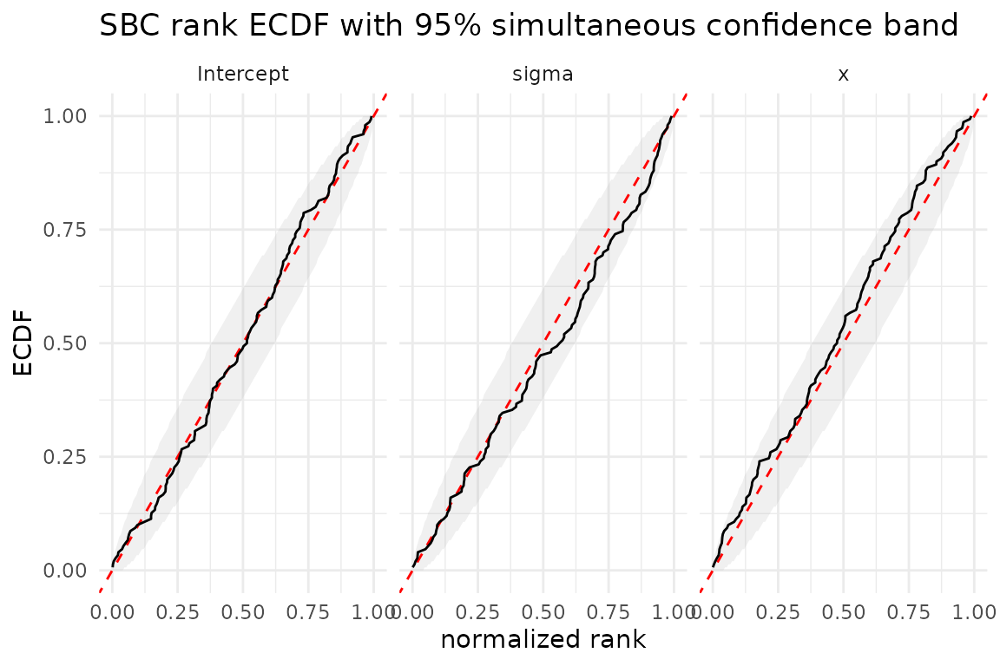
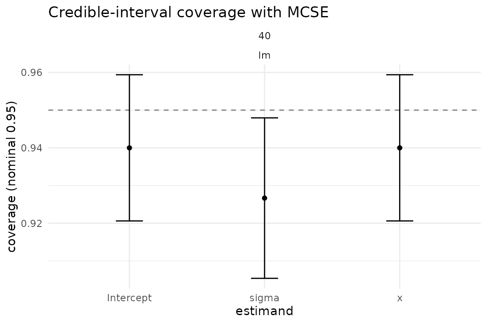

Introduction
Simulation-Based Calibration (SBC) is the standard self-consistency check for Bayesian inference engines. The idea, due to Talts et al. (2018), is sharp:
If we draw a parameter
thetafrom the model prior, simulate datayfrom the likelihood giventheta, and then fit the model toy, the resulting posterior should treatthetaas a single uniform draw.
Equivalently, the posterior rank of the true
theta among the posterior draws should be uniformly
distributed on {0, 1, ..., S}. If it is not, the inference
engine is miscalibrated: the posterior is either too confident (ranks
pile up at the ends) or biased (ranks drift to one side).
This matters because a Bayesian posterior is only useful insofar as its uncertainty statements are honest. Calibration is the property that empirical coverage matches the nominal rate: a 95% credible interval should contain the truth about 95% of the time. SBC is the simulation analogue of this guarantee, applied to the whole posterior rather than to a single interval, and it is sensitive to biases that single-interval coverage can miss.
This vignette runs end-to-end with
LinearRegressionFitter() — exact conjugate
Normal-Inverse-Gamma Bayesian linear regression (real posteriors, no
Stan, milliseconds per fit). For Stan/brms models, swap the fitter for
BrmsFitter() or CmdStanFitter() and use
prior_predictive_generator() /
ifs_generator(); the SBC workflow below is identical. One
caveat: prior_predictive_generator() draws theta from the
model prior (valid SBC by construction when the fitting prior matches),
but ifs_generator() draws theta from a preconditioning
posterior, so its ranks are only uniform if the fitting prior is set to
match that preconditioning distribution — with a diffuse/unmatched
fitting prior, cap-shaped ranks are expected and do not indicate sampler
error (see ?ifs_generator).
Running SBC
The SBC recipe needs three ingredients:
- A data generator that draws
thetafrom the model prior and simulatesy ~ p(y | theta). - A fitter whose calibration we want to check.
- The rank metric (
rank_metric()), which counts how many posterior draws fall below the truetheta, giving one rank per task per parameter.
Below, the generator draws (Intercept, slope, sigma)
from exactly the same Normal-Inverse-Gamma prior passed to
LinearRegressionFitter(), then simulates Gaussian linear
data. In an NIG prior the coefficient distribution is conditional on the
residual variance:
beta | sigma^2 ~ Normal(0, sigma^2 Lambda^-1). Matching
that conditional prior is essential; a prior mismatch is itself a valid
SBC failure mode. Because the fitter is the exact conjugate updater for
this same prior, SBC should pass by construction.
sbc_generator <- function(data_spec, task_ctx) {
n <- data_spec$n
# Exact NIG prior used by the fitter below:
# sigma^2 ~ Inv-Gamma(2, 1)
# beta | sigma^2 ~ Normal(0, sigma^2 / 0.25)
sigma <- sqrt(1 / stats::rgamma(1, shape = 2, rate = 1))
intercept <- stats::rnorm(1, mean = 0, sd = sigma / sqrt(0.25))
slope <- stats::rnorm(1, mean = 0, sd = sigma / sqrt(0.25))
# Simulate y from the likelihood given theta.
x <- stats::rnorm(n)
y <- intercept + slope * x + stats::rnorm(n, sd = sigma)
list(
train = data.frame(y = y, x = x),
test = NULL,
response = "y",
true_params = c(Intercept = intercept, x = slope, sigma = sigma),
vars_of_interest = c("Intercept", "x", "sigma")
)
}The data generator consumes the ambient RNG state —
bayesim restores a per-task L’Ecuyer stream before each call, so do not
call set.seed() inside (see
vignette("reproducibility")).
Now configure and run the study. We use 150 replicates and 1000
posterior draws per fit, with rank_metric(thin = "auto") so
the rank counts are adjusted for autocorrelation in the draws (here the
NIG draws are i.i.d., so no thinning is needed, but the option is there
for MCMC-based fitters).
config <- simulation_config(
data_grid = data.frame(n = 40L),
fit_grid = data.frame(model = "lm"),
data_generator = sbc_generator,
fitter = LinearRegressionFitter(
n_draws = 1000L,
prior_mean = 0,
prior_precision = 0.25,
a0 = 2,
b0 = 1
),
metrics = list(
rank_metric(thin = "auto"),
posterior_summary_metric()
),
n_replicates = 150L,
seed = 7L
)
result <- run_simulation(config, progress = FALSE)
#> 150 tasks = 1 data x 1 fit x 150 reps
#> ℹ Starting simulation with 150 tasks
#>
#> ✔ Simulation complete: 150/150 tasks succeeded in 1.5sEach task records one rank per parameter (here
Intercept, x, sigma), plus the
posterior summaries needed for the coverage check below.
Checking rank uniformity
sbc_ranks() collects the per-task ranks into a long
tibble; plot_rank_ecdf() plots the empirical CDF of the
normalized ranks against the uniform CDF (the diagonal), with the
simultaneous uniformity band of Säilynoja, Bürkner, and Vehtari
(2022).
ranks <- sbc_ranks(result)
head(ranks)
#> task_id param rank n_draws n_ranks data_n fit_model
#> Intercept.1 d001_f001_r00001 Intercept 920 1000 1001 40 lm
#> Intercept.2 d001_f001_r00002 Intercept 148 1000 1001 40 lm
#> Intercept.3 d001_f001_r00003 Intercept 680 1000 1001 40 lm
#> Intercept.4 d001_f001_r00004 Intercept 254 1000 1001 40 lm
#> Intercept.5 d001_f001_r00005 Intercept 826 1000 1001 40 lm
#> Intercept.6 d001_f001_r00006 Intercept 902 1000 1001 40 lm
plot_rank_ecdf(ranks, alpha = 0.95)
How to read the band. The grey ribbon is a 95% simultaneous confidence envelope for the whole ECDF, calibrated with the discrete-uniform method of Säilynoja et al. (2022). Under correct calibration, the entire black ECDF stays inside the ribbon with probability 0.95. Consequently, a crossing anywhere is evidence against uniformity at the 5% global level; it is not the routine pointwise excursion expected from a collection of separate 95% intervals. The dashed red line is the theoretical uniform CDF.
Because LinearRegressionFitter is the exact
conjugate updater, the ECDF hugs the diagonal and stays inside the band
— this is what a calibrated inference engine looks like. With an
approximate engine (e.g. a variational fitter, or a mis-specified MCMC
sampler), the ECDF would systematically depart from the diagonal.
Interpreting failures
When the ECDF systematically leaves the band, the shape of the departure tells you what is wrong:
-
S-shape (ECDF above the diagonal on the left, below on the
right): the posterior is over-confident — the draws
are too tightly clustered around their centre, so the true
thetatoo often falls outside the bulk. This is the classic signature of underestimated posterior uncertainty (undercoverage). - Reflected S-shape (below on the left, above on the right): the posterior is under-confident — wider than the likelihood justifies (overcoverage).
-
One-sided drift: the posterior is biased —
it systematically over- or under-estimates
theta.
Because this is a simultaneous band, even one crossing rejects
uniformity at the displayed global level. The shape and persistence of a
departure remain useful for diagnosis, but they are not required for the
graphical test to flag a problem. A 95% procedure still has a 5%
false-positive probability under perfect calibration, so use a broader
band (alpha = 0.99) or an independent rerun when the
practical decision is consequential. Increasing
n_replicates increases power — SBC is a Monte Carlo
procedure with its own sampling noise.
Coverage as a complementary check
SBC checks the whole posterior at once. A complementary,
more familiar check is interval coverage: does the
nominal 95% credible interval contain the truth about 95% of the time?
plot_coverage() shows this per estimand with MCSE error
bars; performance_measures() reports the same quantity in a
table. Because SBC draws a new truth from the prior for every replicate,
this is a varying-truth study. Accordingly, the table
labels error summaries as mean_error,
error_sd, and error_mse; it does not label
them as the fixed-truth Morris measures bias,
emp_se, or mse.
plot_coverage(result)
pm <- performance_measures(result, estimand = "x")
pm
#> # A tibble: 6 × 8
#> data_n fit_model estimand measure value mcse n_sim truth_mode
#> <int> <chr> <chr> <chr> <dbl> <dbl> <int> <chr>
#> 1 40 lm x mean_error 0.0209 0.0122 150 varying
#> 2 40 lm x error_sd 0.150 0.00869 150 varying
#> 3 40 lm x error_mse 0.0228 0.00396 150 varying
#> 4 40 lm x model_se 0.140 0.00441 150 varying
#> 5 40 lm x coverage 0.94 0.0194 150 varying
#> 6 40 lm x n_sim 150 NA 150 varyingThe coverage row reports the empirical coverage of the
95% posterior interval for the x coefficient, with its
Monte Carlo standard error. For the conjugate fitter this should sit
close to the nominal 0.95 (within a couple of MCSEs). The
truth_mode column is "varying". Here
mean_error is the average replicate-level difference
estimate - truth, and its MCSE is computed from those
replicate-level errors; error_sd describes the spread of
that error distribution. These are useful calibration summaries, but
they are not the empirical sampling SE or bias of an estimator at one
fixed truth.
Coverage vs SBC. Coverage and SBC agree when the
model is well-behaved, but they probe different things. Coverage is a
single-number summary of one interval and can miss miscalibration that
SBC catches: two posteriors can have identical 95% coverage while one
has correct tail behaviour and the other is systematically
over-dispersed in the tails and under-dispersed in the middle. SBC, by
contrast, checks the full posterior shape through rank uniformity. In
practice, run both: SBC as the global self-consistency test, and
performance_measures() coverage as the interval-level
summary a methods paper reports. Use a fixed-truth data generator when
the scientific target is the Morris estimator-performance measures
bias, emp_se, and mse.
Further reading
- Talts et al. (2018), Validating Bayesian Inference Algorithms with Simulation-Based Calibration, arXiv:1804.06788.
- Säilynoja, Bürkner, and Vehtari (2022), Graphical test for discrete uniformity and its applications in goodness-of-fit evaluation, Statistics and Computing 32(2).
-
vignette("design-of-simulation-studies")for the Morris, White & Crowther- framework for designing and reporting simulation studies.
-
vignette("reproducibility")for the determinism guarantees behind SBC rank reproducibility.